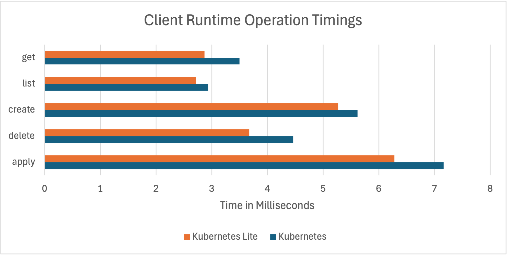
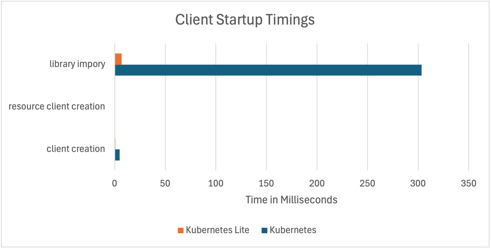
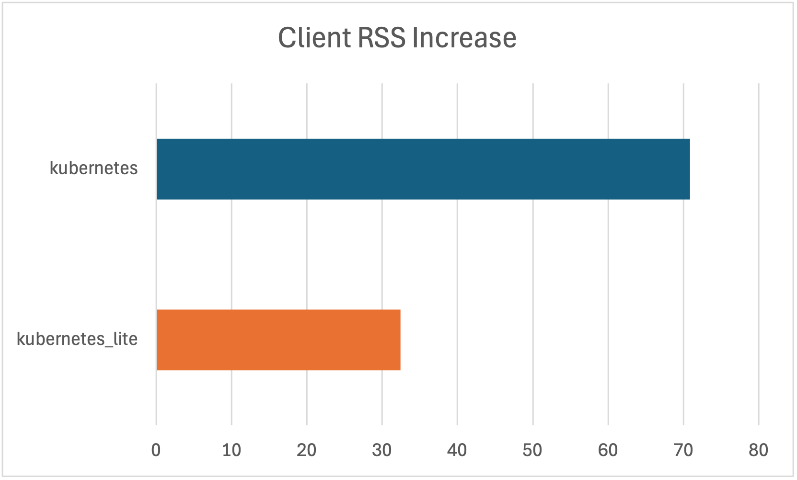

Kubernetes Lite
Kubernetes Lite is a lightweight Python wrapper around key Go-based Kubernetes libraries like client-go, controller-runtime, and envtest made accessible through gopy. It combines Go’s performance with Python’s ease of use—offering faster client operations, reduced memory overhead, and best-in-class testing capabilities.
🚀 Why Kubernetes Lite?
- ⚡ Up to 20% faster than the standard Python client.
- 🧪 Best-in-class testing tools: Run a full Kubernetes control plane locally—no containers or mocks needed.
- 🔧 Fully Compatible with existing Python Kubernetes clients like
kubernetes.
- 🔧 Fully Compatible with existing Python Kubernetes clients like
- 🧠 Unified Go + Python interface: Leverage Go’s resource-efficient internals while writing Python code.
🔬 Built-In Testing with EnvTest
Kubernetes Lite provides Python bindings to Go's envtest—an isolated, real Kubernetes control plane for testing your Python clients and controllers. This eliminates the need for mocking or spinning up complex test environments.
✅ Works with any Kubernetes client
✅ Seamless integration with pytest
✅ Mirrors Go’s native test workflow, including support for KUBEBUILDER_ASSETS and USE_EXISTING_CLUSTER
Example: Using EnvTest with the official Kubernetes client
from kubernetes import client, config
from kubernetes_lite.envtest import EnvTest
from kubernetes_lite.envtest.pytest import session_kubernetes_env
def test_kubernetes_core_api(session_kubernetes_env: EnvTest):
config.load_config(config_file=session_kubernetes_env.config())
v1 = client.CoreV1Api()
pods = v1.list_pod_for_all_namespaces(watch=False)
for i in pods.items:
print(f"{i.status.pod_ip}\t{i.metadata.namespace}\t{i.metadata.name}")
🧰 Compatible and Lightweight Client
Kubernetes Lite exposes client-go’s powerful dynamic client with full compatibility with Kubernetes apimachinery options (both JSON and camelCase formats).
from kubernetes_lite.client import DynamicClient
client = DynamicClient()
client.resource("apps/v1", "Deployment").list()
📉 Benchmark results:
- 🚀 \~20% faster client operations
- 🧠 \~50% lower memory usage
- ⚡ 300ms+ faster startup—ideal for CLI tools or cron jobs
[!NOTE] To be honest the "20%" runtime improvement is just a part of the sales pitch and isn't noticble in the real world. The official client is only 1-3ms behind Kubernetes Lite, which would not impact a networked client where network latencies usually are higher than 1ms. On the other hand, the 300ms startup improvement can be big for often used scripts.



🛠 Setup EnvTest (CLI)
To aid in setting up envtest we also provide a wrapper around the setup-envtest cli:
python3 -m kubernetes_lite.setup_envtest use
Output:
Version: 1.32.0
OS/Arch: darwin/amd64
Path: /Users/yourname/.../k8s/1.32.0-darwin-amd64
You may use it manually before running your tests or let the EnvTest class handle it automatically during startup.
📦 Installation
[!WARNING] Due to Go limitations in version 1.21+, multiple CGO shared libraries are not supported in the same process. Avoid using other Go-based Python libraries alongside
kubernetes_lite. Details
We provide precompiled wheels for x86 and ARM on Linux and macOS:
pip3 install kubernetes_lite
From Source
Make sure you have Go 1.23+ installed:
pip3 install --no-binary "kubernetes_lite" kubernetes_lite
📚 Documentation
🤝 Contributing
We welcome contributions of all kinds! See our contributing guide.
🧭 Code of Conduct
Please review our Code of Conduct before contributing.